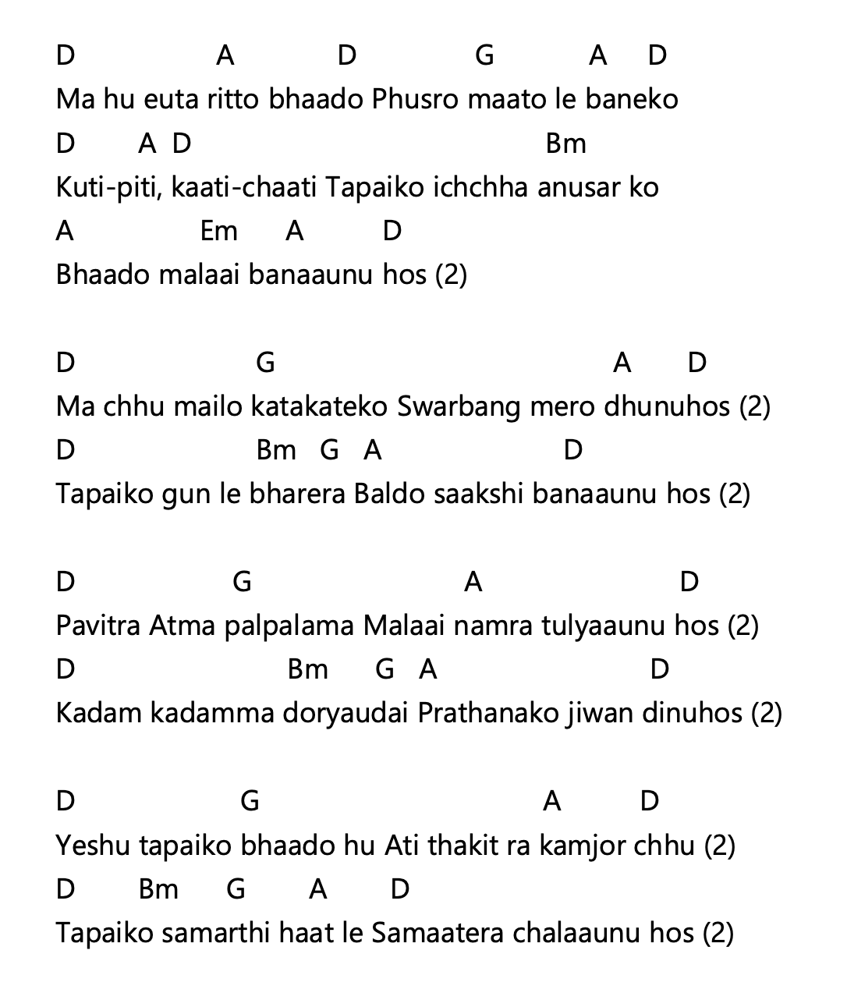
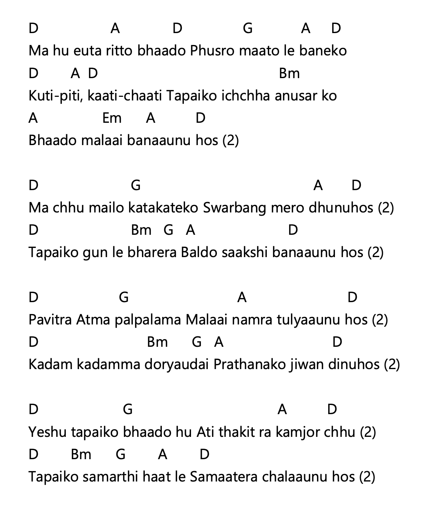
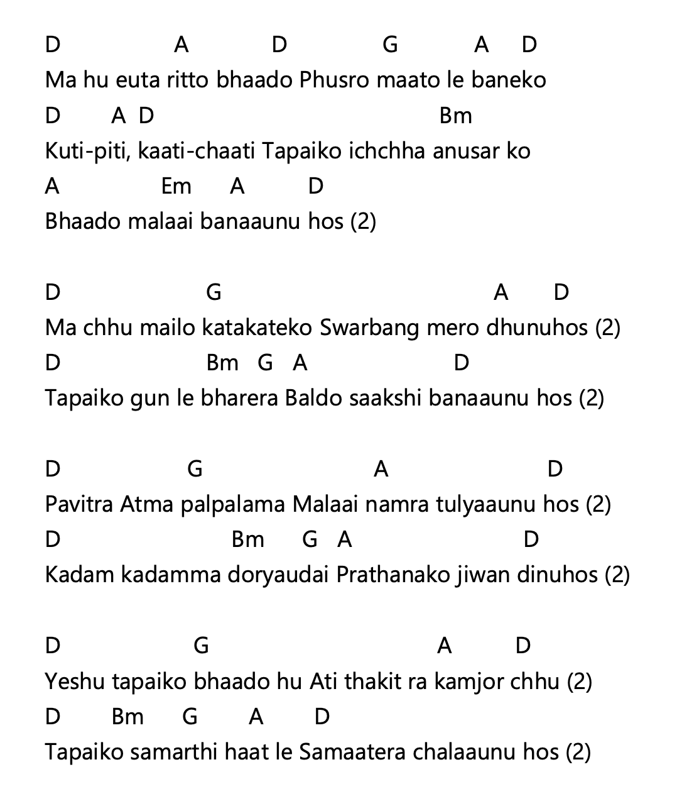
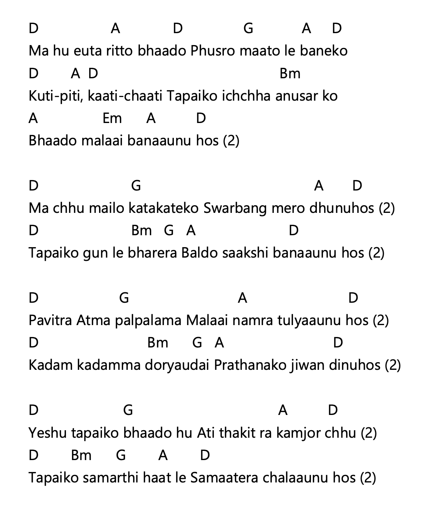
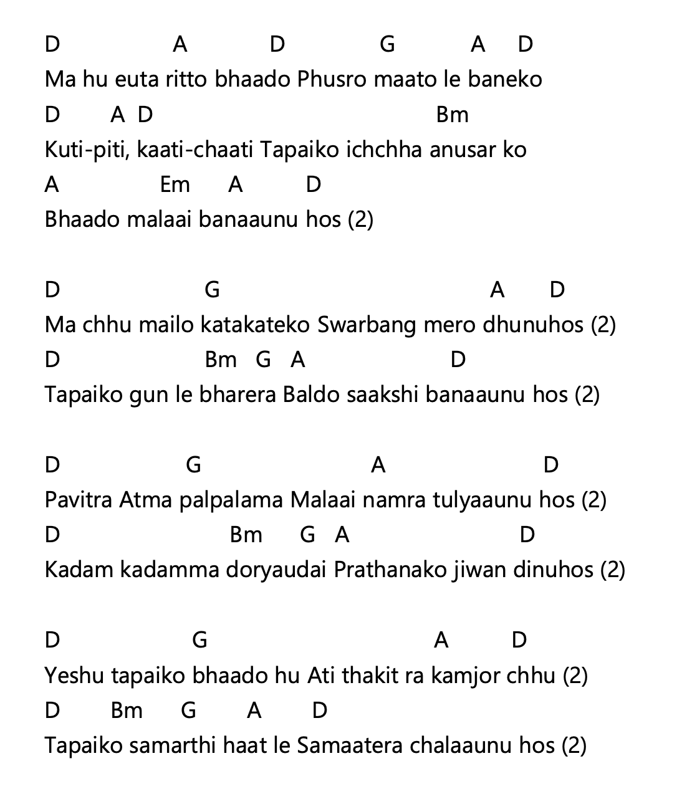
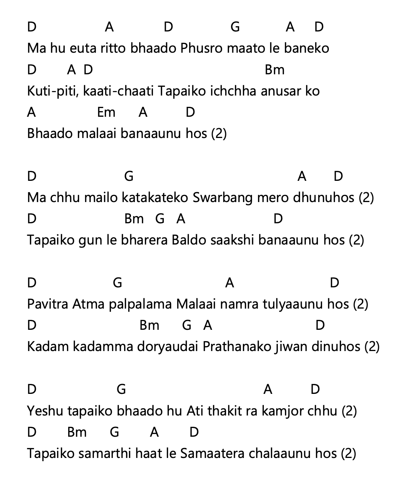

म हुँ एउटा रित्तो भाँड़ो, फुस्रो माटोले बनेको कुटी-पिटी, काटी-छाँटी, तपाईंको इच्छाअनुसारको भाँड़ो मलाई बनाउनुहोस् (२) म छु मैलो कट्कटेको, सर्वाङ्ग मेरो धुनुहोस् (२) तपाईंको गुणले भरेर, बल्दो साक्षी बनाउनुहोस् (२) पवित्रात्मा पलपलमा मलाई नम्र तुल्याउनुहोस् (२) कदम-कदममा डोर्याउँदै, प्रार्थनाको जीवन दिनुहोस् (२) येशू तपाईंको भाँड़ो हुँ, अति थकित र कमजोर छु (२) तपाईंको सामर्थी हातले, समातेर चलाउनुहोस् (२)